Elemente de termodinamică. |
Motoare termice |
G-1. |
Motorul Otto |
În 1867, Germanul Nicolaus August Otto a realizat un motor termic eficient: motorul Otto. Variante modernizate ale acestui motor sunt utilizate şi astăzi pe scară largă.
Corpul motorul este alcătuit din unul sau mai mulţi cilindri cu piston (figura 1−1).
|
Figura 1-1. Reprezentare schematică a unui cilindru cu piston al unui motor Otto în patru timpi. |
În varianta funcţionând în patru timpi, succesiunea evenimentelor dintr−un ciclu este următoarea:
Timpul 1: Admisia. Pistonul delimitează iniţial în cilindru cel mai mic volum. Supapa de admisie este deschisă, iar cea de evacuare închisă. Pistonul este tras (prin rotirea axului motorului) şi în cilindru pătrunde un amestec de aer şi vapori combustibili (figura 1−2a).
 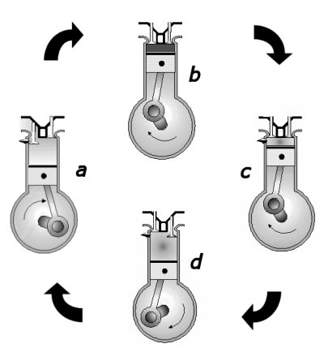
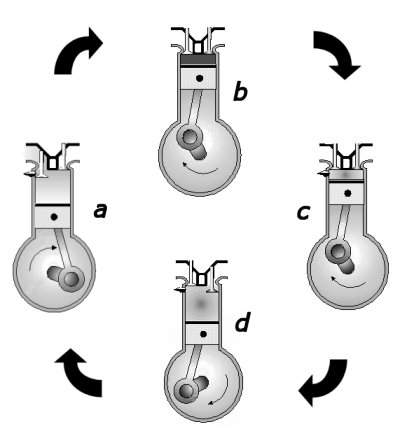
Figura 1-2. Funcţionarea motorului Otto în patru timpi.
Timpul 2: Compresia. La sfârşitul admisiei, pistonul delimitează în cilindru cel mai mare volum. Ambele supape sunt închise. Pistonul este împins (prin rotirea axului motorului) şi amestecul este comprimat (figura 1−2b).
Timpul 3: Arderea. La sfârşitul compresiei, pistonul delimitează în cilindru cel mai mic volum. Ambele supape sunt închise. Amestecul combustibil este aprins printr−o scânteie produsă de bujie şi arde foarte rapid. Motorul primeşte căldură de la arderea combustibilului. Presiunea şi temperatura cresc brusc. Pistonul este împins de gazul care se destinde − motorul efectuează lucru mecanic! (figura 1−2c).
Timpul 4: Evacuarea. La sfârşitul arderii, pistonul delimitează iniţial în cilindru cel mai mare volum. Supapa de evacuare se deschide şi gazul din cilindru îşi reduce brusc presiunea. Pistonul este împins şi gazul este evacuat din cilindru (figura 1−2d).
Această succesiune de evenimente se repetă de zeci de ori pe secundă, furnizând în timpii 3 suficientă energie sub formă de lucru mecanic pentru a menţine motorul în funcţiune, dar şi pentru a menţine în mişcare sistemul cuplat la motor.
 Provocarea 1-1
Provocarea 1-1
Ce ar trebui făcut oare pentru ca randamentul unui motor Otto să fie cât mai mare, transformând astfel cât mai eficient căldura în lucru mecanic?
Dacă ai avea expresia randamentului, ai afla care sunt parametrii de care acesta depinde şi ai putea interveni asupra acestor parametrii pentru a îmbunătăţi eficienţa motorului.
Într−o primă aproximaţie, calculul randamentului poate fi făcut aproximând procesele din timul funcţionării motoruli cu transformări simple ale unui gaz ideal (figura 1−3).
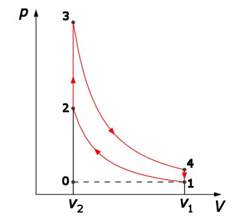
Figura 1-3. Aproximarea proceselor dintr−un motor Otto.
În timpul 1, admisia, volumul gazului din cilindru creşte practic la presiune şi temperatură constantă. Reprezentarea 0→1 a fost făcută punctat, deoarece în tot timpul acestui proces, numărul de moli de gaz din cilindru este variabil − transformarea nu este nici izobară, nici izotermă!
Timpul 2, compresia, este suficient de rapidă, astfel că poate fi aproximată prin adiabata 1→2. În acest proces, amestecul combustibil nu schimbă căldură şi primeşte lucru mecanic. Aproximând amestecul un gaz ideal, lucrul mecanic primit este:
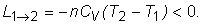
Temperatura amestecului creşte (T2>T1), ceea ce pune probleme de stabilitate a acestuia: amestecul nu trebuie să se autoaprindă înainte de finalizarea compresiei.
Timpul 3, arderea, corespunde succesiunii de transformări 2→3→4. În starea 2 este declanşată scânteia, amestecul se aprinde şi arde. Presiunea şi temperatura cresc atât de repede încât pistonul practic nu se deplasează − procesul 2→3 este aproape izocor. Gazul nu efectuează lucru mecanic şi primeşte cantitatea de căldură:
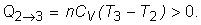
Imediat după aceasta, gazul se destinde suficient de rapid pentru a considera procesul ca fiind adiabatic. Gazul nu schimbă căldură şi efectuează lucrul mecanic:
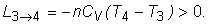
La începutul timpului 4, evacuarea, deschiderea supapei de evacuare provoacă o scăderea bruscă a presiunii şi temperaturii gazului din cilindru, aproape fără modificarea volumului. Procesul poate fi aproximat prin izocora 4→1. Gazul nu efectuează lucru mecanic şi cedează cantitatea de căldură:
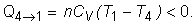
Evacuarea gazului din cilindru este reprezentată punctat, deoarece numărul de moli este variabil.
Poţi calcula acum randamentul ciclului Otto:
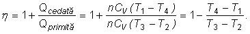
În această formă, randamentul depinde de cele patru temperaturi. Aceste temperaturi nu sunt independente.
Pentru transformarea adiabatică 1→2, poţi scrie:
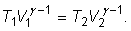
De aici, obţii imediat:
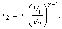
Raportul volumelor extreme ale ciclului, 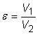, este numit raport de compresie, astfel că:
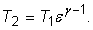
Asemănător, din ecuaţia adiabatei 3→4, obţii:
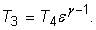
Cu acestea, randamentul ciclului Otto este:
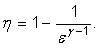
Aşadar, randamentul ciclului Otto depinde doar de raportul de compresie ε! Deoarece exponentul adiabatic este supraunitar, cu cât este mai mare raportul de compresie, cu atât mai mare este randamentul!
În practică, raportul de compresie tipic al unui motor Otto este în gama 8...12, fiind limitat de calităţile combustibilului folosit.